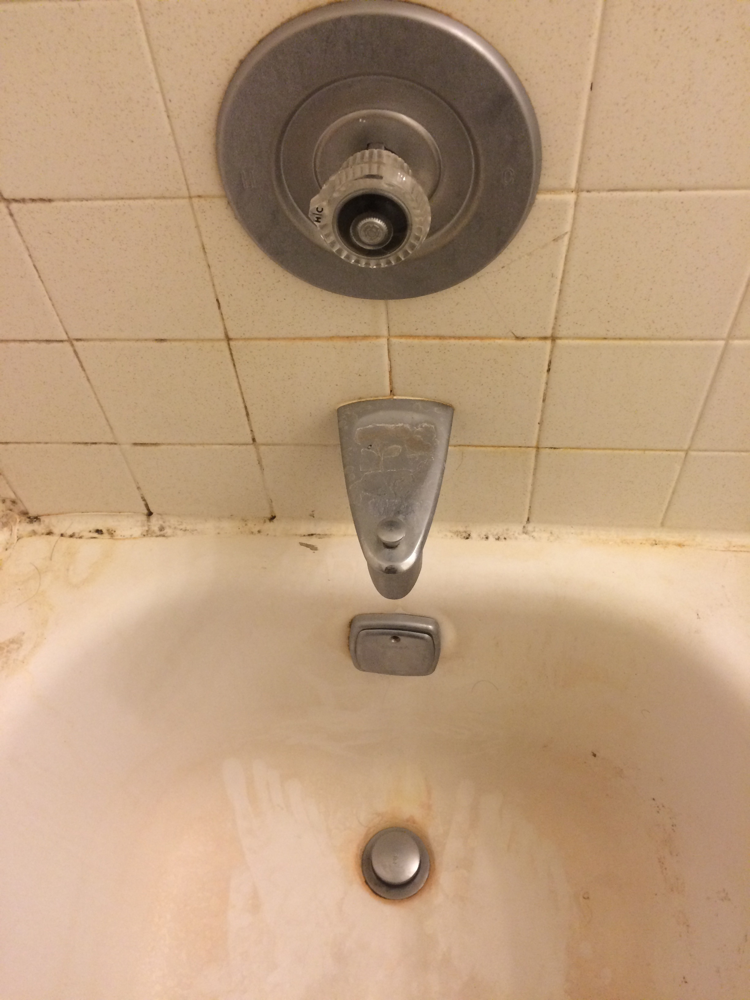
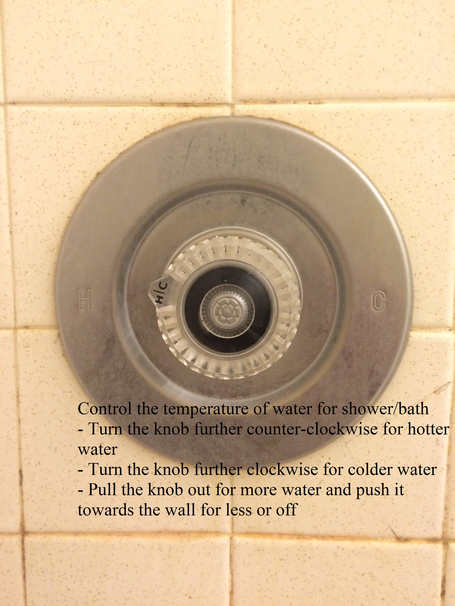
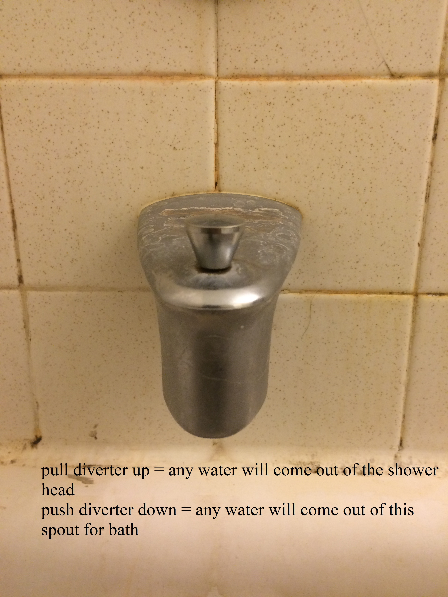
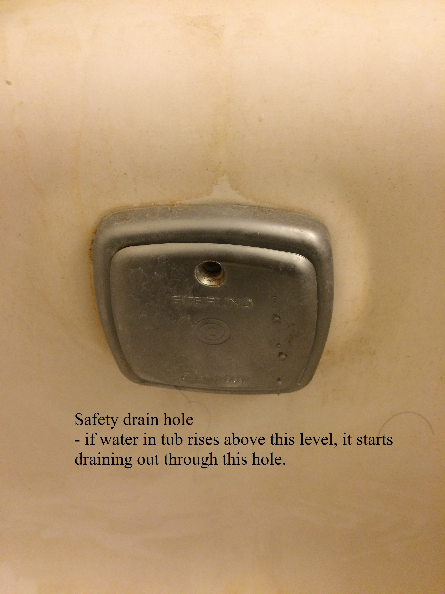
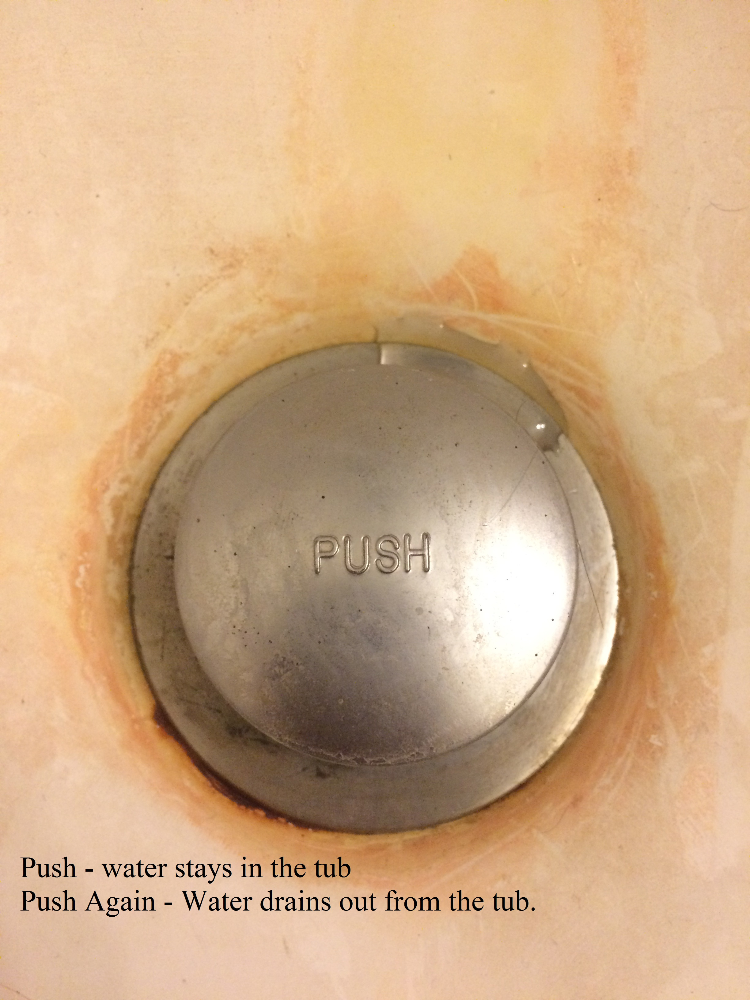

Splish Splash
Its not an easy thing to figure out how a shower works and have a comfortable shower when we go to hotels or even visiting friends and family in different places. It is the bad design of the shower or bathtub that makes you think a lot to just take a relaxing shower. One from the pool of common shower/bathtub designs is explained/critiqued here and possible improvements to the design are discussed.
Shower/Bathtub Pictures





Sequence of actions for a "Comfortable Shower"
Step 1: Go into the shower and close the curtain
Step 2: Adjust the shower head, so that you are not really surprised by the very hot or very cold water that comes first from the shower
Step 3: Examine and turn the knob available to required level of hot or coldness
Step 4: Pull the knob in order to let the water out and see if the water is at comfortable temperature
Step 5: Control the rate of water flow by pushing/pulling the knob
Step 6: Pull the diverter lever to divert the water into shower
Step 7: When the water is flowing at an appropriate rate and desired temperature, tilt or adjust the shower head in the desired direction and enjoy the shower.
Sequence of actions for a "Comfortable Bath"
Step 1: Go in and close the curtain if there is one and necessary
Step 2: Chek whether the water remains in the bathtub or gets drained, if it is getting drained "PUSH" the drain plug once
Step 3: Examine and turn the knob available to required level of hot or coldness
Step 4: Pull the knob in order to let the water out and see if the water is at comfortable temperature
Step 5: Control the rate of water flow by pushing/pulling the knob in order to fill the tub fastly of slowly.
Step 6: Turn the water off by pushing the knob when the water in the tub is at desired level and have a comfortable bath.
Step 7: Drain the water in the tub by pushing the drain plug again.
Uses of Shower/Bathtub
Common uses of Bathtub
To take bath
Clean the dog
To bathe babies
More rare uses of Bathtub
Wash clothes that shed color and cannot be washed with other clothes
Clean the dirt off the pants
Wash dustbins or garbage cans that need to be washed
Clean the fish tank
Uses of Shower
Washing hair (common use)
Cleaning the side walls in a shower (rare use)
How does this shower/bath help you figure out how to work it?
- The hot and cold knob present is an obvious control for the temperature of water.
- The control to get the water is a tricky thing of pulling the knob outwards rather than just turning it. It takes up to two trails to figure out that one needs to pull the knob for the water to flow.
- The control to direct water to the shower is to pull the lever up on the faucet to the tub.
- The lever to let the water stay in the tub is also a little confusing it only says “PUSH” on it , the user needs to try how to make the water stay in the tub and how to drain the water by actually letting water out.
How does this system let you know what state it is in?
- The diverter lever shows weather the water will flow from the shower if it is pulled up, and to the tub if pushed down.
- The lever shows that the knob needs to be turned left for hot water and right for cold water.
- The knob contains a projection that shows where on the wheel the temperature is from hot to cold.
- The system doesnot actually show any "ON" or "OFF" status , it should be derived from whether the knob is pulled from or pushed towards the wall.
How easy is it for a guest to use this?
It would be tough for the guest to understand about pulling the knob for water and rate of water flow, and also the drain plug figuring out how to make the water stay in the tub or drain it. The other controls like the knob and the diverter lever are intuitive and easy. The guest might find it a little difficult to change the type of spray in the shower head or he/she doesn't even notice that it is possible because it is not written anywhere that one can do so.
Good Things in this Design
- The knob interface is very intuitive for a shower to control the temperature.
- The knob contains the shape that has grooves in the knob which provides grip for the user even while he/she is bathing and has soap on their hands.
- The knob has a pointed projection and a line on it to indicate the hotness or coldness of the water.
- The metal frame also has letters H and C engraved on them, this helps the user to move his fingers over the metal frame and sense the letters when he/she is unable to see because of soap or steam and turn the knob accordingly.
- The knob has letters H and C written to the left and right side of the pointing line on the knob in order for the user to understand that he has to rotate the knob left (anticlockwise) for hot water and right (clockwise) for cold water.
- The lever for the director shows the system status and is also a good interface for the user to pull and push for the water to be directed to shower and bathtub respectively
- The shower head is easily adjustable to the desired direction
- The shower head consists of various spray types which can be adjusted.
- There is a safety drain that drains out any water beyond the level of the metal plate in order to avoid the overflow of water in the bathtub.
Bad Things in this Design
- The shower head allows for the user to change the spray type, there are grooves provided to turn the shower head with three fingers, but this is not at all intuitive, these grooves look more like showy design of the shower head rather than the affordances to rotate and change the spray type.
- Even if the user somehow figures out that he/she can change the spray type it is not easy to do that, the entire shower head rotates on rotating it and the user has to hold the upper part with one hand and rotate the lower part with the other hand to change the spray type. If the user’s hands are slippery due to water or soap then it is very difficult to change the spray type.
- The interface of the knob to pull it in order to let the water out of either the tub or shower is very confusing, there is no immediate feedback on rotating the knob, it is obvious that when a knob is given it is turned rather than it is rotated. The user might need to experiment a little on how to get the water using the knob and there is a fair chance he will be hurt by the very hot or very cold water.
- The flow of the water is controlled by the extent to which the knob is pulled, pull totally out until it can no more be pulled for highest rate of the flow and pushing it lowers the rate of flow and finally turns off.
- There are no signs that tell the user to pull the knob for water.
- When particularly elder people are taking bath or shower the letters H and C on the metal plate are not clearly visible and the letters H and C on the knob are too small to be visible.
- The drain plug in the bath tub says “PUSH”, though there is feedback provided by the plug on pushing it, it is not very clear very keen observation is required to know the status of the drain plug or the user has to make some trails leaving water into tub and checking whether it stays in the tub or not.
- The shower head is not at a reachable height to the kids.
Language
- The letters are H and C English letters standing for Hot and Cold, though English is widely used guests from different countries might get confused what these letters mean.
- The knob triggers the turning action to change between hot and cold.
Mappings
The lever on the faucet to the bath tub can be pulled to divert the water to the shower and pushed to divert the water to the bathtub, this maps to the position of shower being above ones head and the bathtub below.
Symbols and Accessibility
- The shower head is accessible at a reachable height to adults and can be easily turned to the desired direction, without much effort.
- There are symbols on the knob and the safety drain plate that that are basically manufacturer branding logos and names, which are not of a concern to the user.
Improved Shower Design
Improvements made in the new design
- The shower is a movable part just like the telephone to facilitate for the kids who can't reach the shower easily.
- This movable shower comes handy while cleaning babies or dogs in the bathtub and they can experience the shower as well.
- The shower head is in the shape of the receiver of an old telephone, to facilitate for easy grip. It can be hanged on a stand that is made of flexible metal which can be adjusted.
- The shower head has a small slider interface which can be used to adjust the flow, sliding it clockwise increases the flow and counter-clockwise to reduce the flow, however the shower head doesnot facilitate for the different spray types.
- The diverter lever is like a switch interface where if it is pushed up it directs the water to shower head and if it is turned down it directs the water to bath tub.
- Since the language was a barrier for people from other countries in the existing design, colors were used to indicate the hot and cold, in most of the cultures blue indicates cold and red indicates hot.
- A means to turn off the water is provided which is an easy interface in many cases where the user searches to turn the water flow off of the shower or tub.
- All the text that is written like "HOT", "COLD" "OFF" are embossed on the steel plate where the handle is mounted, in order to allow the users to sense the words by touching them when they are in shower or bath.
- The text is also written in Braille, to facilitate for the users who are visually impaired.
- The faucet also has a small slider, which can be used to increase or decrease the flow of water from the faucet. The rationale for having independent controls for flow at shower and faucet are that the flow from the faucet to tub will be higher in general to fill the tub faster and the flow at the shower head is often adjusted.
- Safety drain hole is added so that in case the user forgets to turn the waterflow off the tub should not overflow.
- The drain plug in the existing design does not give much information about the status of the system i.e, whether the water will stay in the tub or not. But the drain plug is far more intuitive design that makes more sense to the user and the interfacing is as simple as covering the drain hole with a drain plug.